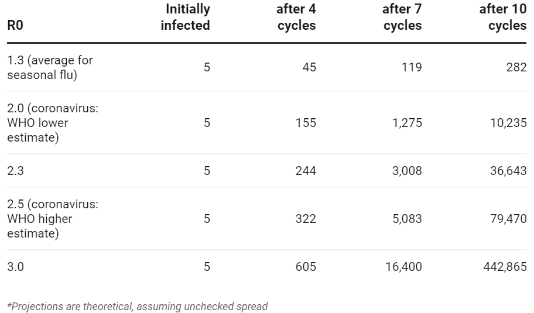
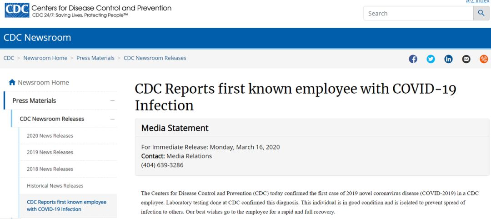

首都及32州已“沦陷”，特朗普：我一点都不担心，集会照办
原文链接 备份链接 2月29日，特朗普出席“保守派政治行动大会”。图片来源：CPAC/Twitter 记者 | 潘金花 “ “我一点都不担心。”美国总统特朗普告诉记者，自己不会因为新冠肺炎疫情而取消政治集会。要 ” “我一点都不担心。” …
美国的情况将会变得多糟糕？华盛顿州州长杰伊 · 伊斯利（Jay Inslee）在 3 月 10 日曾表示，仅仅在华盛顿州，两个月内感染人数就可能达到 6.4 万人。而该数据是目前全美公布确诊人数的 16 倍，根据美国约翰斯 · 霍普金斯大学发布的实时统计数据显示，截至北京时间 3 月 17 日早 6 时，美国新冠肺炎确诊病例已达 4,464 例。
在杰伊 · 伊斯利发表上述言论时，这种预测听起来十分吓人而且不切实际，因为当时华盛顿州仅确诊了 162 例新冠肺炎。但到了 3 月 14 日，该州的确认人数已有 642 人，这表明确诊病例是如何迅速地翻倍的。美国总统特朗普于 3 月 13 日在白宫宣布美国进入“国家紧急状态”，以应对新冠肺炎疫情，并介绍了最新的检测流程。
如果要推测美国可能发生的情况，最坏的可能则要参考在意大利已经发生的一切。目前，意大利已经有 27,980 例确诊病患，死亡 2,158 例，并且还在持续地增加。
 图 | 意大利的确诊病例曲线（来源：worldometers）
图 | 意大利的确诊病例曲线（来源：worldometers）
在意大利抗疫一线的医生 Daniele Macchini 于 3 月 8 日发表了一篇博客文章，他表示，在疫情初期医院在做准备，慢慢地选择性清空了此前的病人，营造出一种 “我们仍然不理解的、超现实的寂静和空虚的气氛” 时，那种早期的平静感。这种感觉就像在为一场战争做准备，而医护工作者们并不确定这场战争会不会到来。
但是随后，患者开始陆续进入医院，并且总是得到相同的诊断：双侧间质性肺炎，这种疾病会侵袭肺部，使呼吸困难。“人们之前都听从建议，轻微症状时在家中发烧一周或十天而没有外出，这降低了传染他人的危险。但直到他们再也不能忍受了，开始喘不上气，需要氧气。”因此，重症监护室很快就塞满了。
Macchini 写道：“战争确实爆发了，并且日夜不间断。不再有外科医生、泌尿科医师、骨科医生，我们只是医生。”他突然成为了一个团队的一部分，来面对这场不堪重负的灾难。由于对新冠病毒的药物疗法有限，治疗主要取决于个体的抵抗力，希望身体可以自行消除病毒。
随着病例成倍增加，医院的病床正以惊人的速度填补，拭子的结果一个接一个地出现：阳性、阳性、阳性。“急诊室突然崩溃了。”Macchini 表示，“尽管社交网络上仍有一些人以不害怕、忽略自己的恐惧而感到自豪，并抗议限制了他们的正常生活方式。但事实是，流行病正在可怕地发生。”
根据世卫组织的数据，新冠肺炎的总体病死率大约为 3.5％，尽管真实数字尚不确定，因为某些病例可能没有症状。但在意大利，这一比例可能会高于 6％。其中有部分原因是意大利的人口年龄较大——80 岁以上人群的病死率或是 20 岁以下人群病死率的 1000 倍。根据此前数据，80 岁以上的人或有 18％ 的死亡概率。
Macchini 在文章中呼吁人们保持距离，停止聚集以减缓疾病的传播：“请分享！分享！分享该信息。我们必须宣布出去，以防止在意大利发生的事情再次上演。”这是意大利过去几周的故事，接下来的几周美国又会有怎样的故事发生？
到目前为止，医生已经知道了该疾病的一些传播模式，而病毒感染的传播速度则取决于其内在特性，也取决于社会给予病毒的传播机会。每种病毒都有一个所谓的基本感染数（R0），它是一个感染者会感染多少其他人的度量。
图 | 基本感染数（R0）如何影响疾病的传播能力（来源：MIT Technology Review）
目前，对新型冠状病毒的 R0 估值介于 2.0 和 2.5 之间。但根据世界卫生组织的说法，这只是最佳推断。相比之下，普通流感的平均 R0 为 1.3；而麻疹等传染性极强的疾病，其 R0 大于 10。从上述表格可以看出，理论上讲，该病毒可以从最初的 5 个受感染人向外迅速传播，尽管实际上在一定数量的增长后，传播速度会逐步放缓。
注意，R0 的数值并不是一成不变的。隔离患者，以及其接触者可以有效改变传播率。对于在 2003 年爆发的 SARS 疫情，最终正是通过类似的公共卫生措施彻底消灭了病毒。因此采取 “社会疏离” 手段是减慢病毒传播最为有效的方法。在新冠病毒传播不受控制且检测能力不断提高的地区，确诊病例的数量在成倍增加。与华盛顿过去的一周一样，每隔两天就会增加一倍。
但是，一旦采取了相应减少传播的措施，确诊病例翻倍的时间就会大大减慢。例如，在日本的确诊病例在 10 天才翻了一倍。
为了避免不堪重负的医院发生危机，政府和卫生机构必须采取手段减缓疫情传播速度。而这个思维模式就和英国、德国等国家所谓的 “拉平曲线” 的想法类似。其认为，尽管可能最终大多数人仍会感染病毒，但随着将传播时间的拉长，将有机会挽救更多生命。因为这将使人们得到更好的护理。一旦医院的重症监护室挤满了患者，并且没有足够的设备（如呼吸机等）来治疗，就会出现意大利那样的艰难处境，可能导致更高的死亡率。
检测能力跟得上吗？
世界卫生组织负责人向全世界传达了一个简单的信息，即应该对谁进行新冠病毒检测：“检测、检测、检测，对每个可疑的病例进行检测。”但根据 CNN 报道，虽然美国卫生官员表示测试正在加速进行，并且在多个州都进行了直通测试，但目前仍然缺乏可用测试。
目前，美国一线的医护人员正在统计拥有的每台呼吸机、每个 ICU 病床，并正在针对最坏的情况进行应急计划。同时，白宫冠状病毒特别工作组负责人、副总统迈克 · 彭斯（Mike Pence）和高级卫生官员正尝试让一个 “神经紧张” 的国家平静下来。他们表示，对新冠病毒的测试进入了一个“新阶段”，因为本周将有 2,000 多个实验室上线。而这是与商业实验室合作扩大测试范围的结果。
彭斯曾表态，将优先考虑医护人员和急救人员，“他们在那里，并伴随着受到新冠病毒影响的人。”此外，他还表示具有咳嗽、发烧或其他症状的 65 岁以上的美国人也是高度优先关注对象。但在对抗新冠病毒的前线，一些医院的工作人员说，他们暂时没有感到“被优先考虑”。
在新罕布什尔州的一名注册护士说，她所在医院的医护人员没有 N95 口罩，这迫使他们不断重复使用旧的口罩。并且也有患者在最近测试呈阳性后，从急诊室走到医院病房接受治疗时，整个过程也没有按照适当的安全规程进行。这名已工作了 28 年的资深护士（因担心报复而要求不愿透露姓名）说：“所有医生和护士都与病人接触。如果有人测试呈阳性，那么我们有很多人将不得不在家中隔离两个星期，而现在的人手已经开始不足了。”
图 | 美国疾控中心报道首例工作人员确诊（来源：CDC 官网）
美国疾控中心在 3 月 15 日宣布，有员工感染了新冠病毒，这是该机构的第一名感染者。不过 CDC 表示，这名新冠病毒检测呈阳性的员工目前 “情况良好，并且已被隔离，以防止传染其他人。” 声明补充说道，同一单位的其他员工正在远程办公，同时办公室也在进行深度清理。CDC 表示，出于隐私方面的考虑，他们不会透露有关此病例或后续其他病例的更多细节。
除此之外，美国国防部新闻发言人、公共事务部部长助理 Jonathan Rath Hoffman 称，截至 3 月 16 日 5 点，美国国防部已报告 37 例新冠肺炎确诊病例。其中包括 18 名军人、13 名家属、3 名平民，以及 3 名承包商人员。发言人表示，截至前一日早晨，美国国防部已有 495 人接受了新冠病毒检测。美国国防部长马克 · 埃斯珀（Mark Esper）将与他的副手及其他工作人员保持隔离，以防止新冠肺炎病毒扩散。
最坏的建模预计：2.14 亿美国人感染，170 万人死亡
如果不采取积极行动来减缓新冠病毒在人与人之间传播速度，在美国最坏的结果将会发生什么？
根据《纽约时报》报道，美国 CDC 的疾病建模人员预计，可能会有多达 65％ 的美国人最终感染新冠病毒。根据该报道，美国疾控中心与 50 个专家团队共享了其建模模型，所有的团队都在努力地估算病毒传播的速度，以及其引起的病例的严重程度。
最坏情况的数字反映出，如果不采取措施减慢病毒的传播速度，这种病毒会在人与人之间快速传播。如果不控制这种传播方式，那么每个感染病毒的人都可能感染另外两到三个人，从而导致传染性不断增长。当然，要注意的是，对大流行病的真实过程进行建模取决于更广泛且准确的科学信息，并且必须要考虑应对措施的效果及诸如医疗设备储备等问题。
根据《泰晤士报》报道，美国 CDC 预计，美国最终可能有 240 万至 2100 万人最终进入医院，而其中的重症患者或将 “挤满” 美国的急诊病房和重症监护病房。在某些模型预测中，美国最终的死亡人数可能为 20 万至 170 万之见。相比之下，美国每年约有 3 万人死于流感。
 图 | 商店的货架空空如也，购物者囤积了大量商品（来源：MIT Technology Review）
图 | 商店的货架空空如也，购物者囤积了大量商品（来源：MIT Technology Review）
3 月 15 日，美国总统特朗普呼吁美国人停止囤积食品杂货和其他物资，“你不必买那么多。别着急，放松点就行了。”特朗普在与主要杂货连锁店的管理者交谈后向美国人保证，杂货店将继续营业，供应链将保持健康。但在特朗普发表上述言论之前，美国国立卫生研究院国家过敏和传染病研究所的负责人、政府首席传染病专家安东尼 · 福奇（Anthony Fauci）博士表示，他希望看到更激进的管控措施，如全国停摆 14 天，这将要求美国人尽量宅在家里，以帮助减缓新冠状病毒的传播。
美国 CDC 的专家之一朗尼尼（Ira Longini）则对媒体表示：“面对疫情，你赢不了。如果你做得过头，就会让人惊慌。而如果你做得不好，人们就会轻视。所以，你必须要小心。”
而美股历史性地在 6 个交易日内发生了熔断“三连击”，或许让特朗普切实感到了些许惊慌。3 月 16 日下午他在白宫举行发布会，宣布应对新冠肺炎疫情的指导意见，建议民众避免参加 10 人以上的聚会，远离酒吧、饭馆等公共场合。另外，尽量减少出行。指导意见同时还要求已经出现社区感染的各州关闭酒吧、饭馆和其他公共设施，但这并不是强制措施。
特朗普也首次对外表示：“美国经济有可能将出现衰退，不过，目前首先控制疫情蔓延是美国各级政府的工作重心。”在美股暴跌近 13%，创下近三十多年来的跌幅纪录之后，似乎刺激了特朗普的 “种族主义神经”。他在 Twitter 上将新冠病毒称为“Chinese Virus”，这引发了众多民众的激烈反应，在其状态之后的留言也极为“割裂” 与“极端”。
图 | 特朗普的 “种族主义” 言论截图（来源：Twitter）
任何一种病毒都不应是哪一个国家的问题，而是全世界、全人类的问题。尤其，在世卫组织宣布新冠病毒是 “全球大流行” 病之后，新冠肺炎疫情已是一个全球共同面对的问题。
各国政府应该对自己应付的责任有所担当，“甩锅”控制不了疫情的蔓延，也阻止不了经济的下滑。只有保持理性的态度，积极科学地安排应对疫情的防控措施，才是当下面对新冠病毒最有力的回应。
-End-
参考：
https://www.technologyreview.com/s/615364/coronavirus-covid-19-deaths-projections-united-states-italy/
https://www.technologyreview.com/s/615358/worst-case-coronavirus-scenario-214-million-americans-infected-17-million-dead/
https://www.technologyreview.com/s/615361/us-coronavirus-testing-is-slowly-ramping-up-but-way-too-late/
https://www.cnn.com/2020/03/16/us/coronavirus-testing-problems-linger-invs/index.html?utm_content=2020-03-17T01%3A45%3A17&utm_medium=social&utm_term=link&utm_source=twCNN
https://www.ncbi.nlm.nih.gov/pubmed/19545404
https://www.who.int/docs/default-source/coronaviruse/situatio-reports/20200306-sitrep-46-covid-19.pdf?sfvrsn=96b04adf_4

原文链接 备份链接 2月29日，特朗普出席“保守派政治行动大会”。图片来源：CPAC/Twitter 记者 | 潘金花 “ “我一点都不担心。”美国总统特朗普告诉记者，自己不会因为新冠肺炎疫情而取消政治集会。要 ” “我一点都不担心。” …
原文链接 备份链接 目前包括中国大陆在内，全球已经有41个国家和地区出现了疫情，其中，韩国是中国大陆之外疫情蔓延最快的国家。 尽管如此，世卫组织不希望在“没有谨慎和清晰地分析事实情况之前”仓促宣布疫情为全球“大流行病” 文 |《财经》特派 …
原文链接 备份链接 当人类生存的主题被病毒、大流行病裹挟时，在白宫坐镇的特朗普、民间看好的疾病专家安东尼·福西和美联储主席鲍威尔纷纷出招，是老旧的套路还是定海神针，还未可知 文 |《财经》特派记者 金焱 发自华盛顿 编辑 | 苏琦 3 …
原文链接 备份链接 【财新网】（记者 卿滢）3月9日，意大利宣布全国各地进入“封城”，欧洲全境内的新冠肺炎疫情也进一步加剧；西班牙一夜之间确诊人数翻倍，法国文化部长和瑞典央行副行长感染。随着塞浦路斯确诊首例患者，疫情已经扩散至欧盟全境27 …
原文链接 备份链接 文 |《财经》特派记者 金焱 发自华盛顿 编辑 | 苏琦 2020年3月6日，我打算给自己放一天的假。 算起来自从武汉疫情暴发，我在1月21采写了第一篇文章《美确诊首例新型病毒病例，或成全球性公共卫生危机事件信号》 …